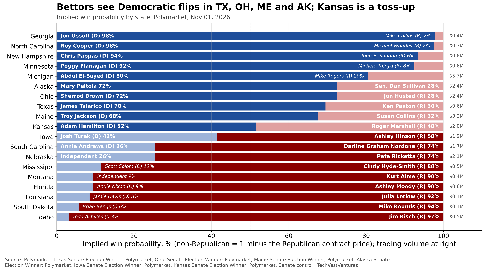
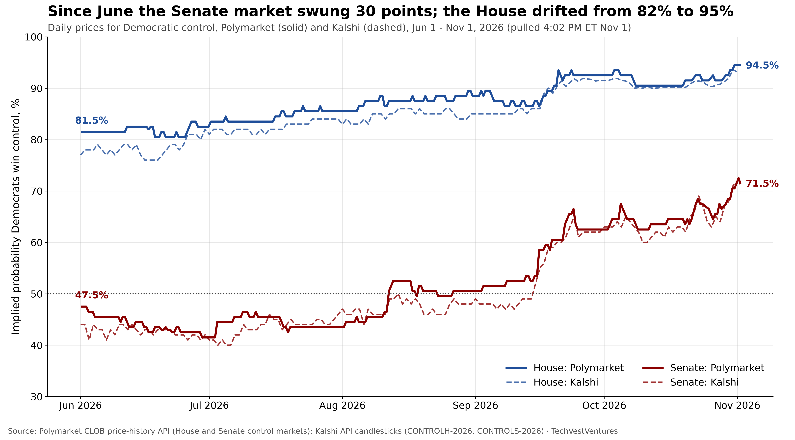
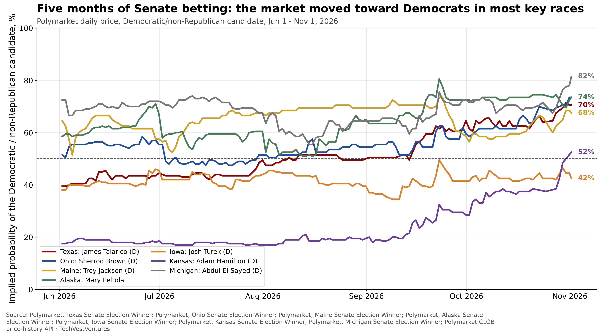
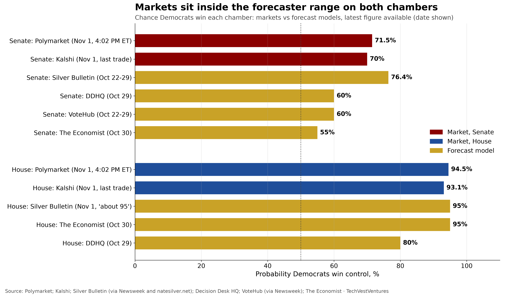
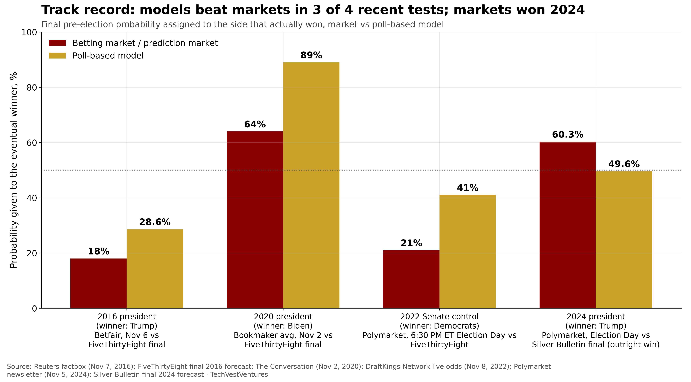
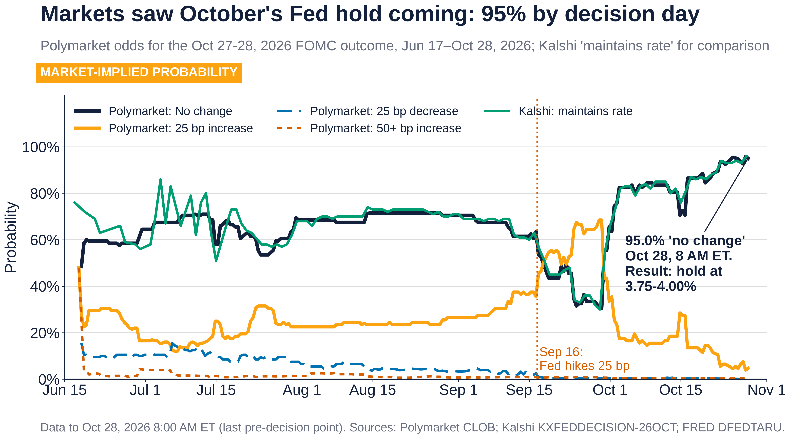
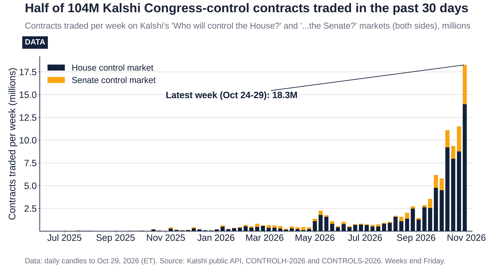

TVV Focus Report: Prediction Markets and the 2026 Midterms
TVV FOCUS REPORT | Prediction Markets | 2026-11-01 v1.0
Market prices in this report were pulled at 4:02 PM ET on Sunday, November 1, 2026, two days before the November 3 election, unless another date is shown. A price of 72 cents on a contract that pays $1 is read as a 72% implied probability. Prices are crowd odds, not forecasts, and they are not polls.
Bottom line
- The money says a Democratic Congress. On Polymarket Democrats were 94.5% to win the House and on Kalshi 93.1%. For the Senate, Polymarket had Democrats at 71.5% and Kalshi at 70%. The two exchanges are within 1.5 points of each other on both chambers.
- The Senate is where the market moved. Since June 1 the Polymarket Senate price rose from 47.5% to 71.5%. It last traded below 50% on August 26 and has stayed above since. The House drifted up from 81.5% to 94.5%.
- Markets are inside the forecaster range, not outside it. House models run from 80% (Decision Desk HQ) to about 95% (Silver Bulletin, The Economist). Senate models run from 55% (The Economist) to 76.4% (Silver Bulletin). The markets sit near the top of the Senate range.
- The track record is mixed. In four recent tests the poll-based models gave the eventual winner a higher probability than the markets three times (2016, 2020, 2022). The markets did better in 2024. Academic work finds political prices tend to be compressed toward 50%.
- The risks are real and documented. A Columbia study estimated about 25% of Polymarket's historical volume was likely wash trading. An anti-corruption group found 97% of live congressional markets could be moved 5 cents with $3,500 or less. Courts are split on whether states can police these markets.
- Scoring comes next. A scheduled run on Monday, November 2 snapshots the final odds, and a run on Wednesday, November 4 scores them against the results. Those results will appear in v2.0. This version invents no outcomes.
1. What the markets say now
Two regulated or semi-regulated venues dominate US political betting this cycle. Kalshi is a CFTC-registered exchange that trades in dollars. Polymarket runs a global crypto-settled exchange and, since December 2025, a US platform, Polymarket US (per the New York Attorney General). On the two headline questions they agree almost to the point.
House. On Polymarket's House control market the Democratic contract stood at 94.5 cents, with a bid of 94 and an ask of 95. The event has traded $36.0 million since it opened in July 2025, and Polymarket reported $13.5 million of resting liquidity. On Kalshi the Democratic contract last traded at 93.1 cents. Kalshi counts contracts, not dollars: 92.3 million House-control contracts have changed hands on both sides of the market.
Senate. On Polymarket's Senate control market Democrats were at 71.5 cents (bid 71, ask 72), on $14.0 million of volume and $6.8 million of reported liquidity. Kalshi showed 70 cents (bid 70, ask 71) on 25.8 million contracts.
Key races. Chart 1 shows where the Senate money sits state by state. Bettors favour Democrats in four Republican-held seats: Texas (James Talarico 70%), Ohio (Sherrod Brown 72%), Maine (Troy Jackson 68%) and Alaska (Mary Peltola 72%). They also favour Abdul El-Sayed in open Michigan (80%). Kansas is a coin flip (Adam Hamilton 52%), and Iowa leans Republican (Ashley Hinson 58%). In Nebraska an independent challenger trails Pete Ricketts 27% to 75%. Texas is the most heavily traded race at $9.6 million (Polymarket Texas, Kansas).

Chart 1. Polymarket win prices in 19 Senate races with active markets, snapshot November 1, 2026. The non-Republican share is 1 minus the Republican contract price. Prices need not sum to 100% because of spreads and fees. Source: Polymarket state Senate markets.
Takeaway: The market's Senate majority runs through Texas, Ohio, Maine and Alaska. If those four flip and Michigan holds, Democrats reach 51 without Kansas. Thin state markets (under $0.5 million) can move on small trades.
2. The swings since June
The big story of the summer and autumn is the Senate. Chart 2 tracks the daily price of Democratic control on both exchanges since June 1. The two lines move together, and the gap rarely exceeds a few points.
The Polymarket Senate price fell from 47.5% on June 1 to a low of 41.5% on June 29. It first crossed 50% on August 12, slipped back, and last traded below 50% on August 26. The sharpest step came in mid-September, when it rose from 53.5% to 58.5% between September 15 and 16, and then to 64.5% by September 22. After a flat October it climbed again in the last ten days, from about 64% to 71.5%. The House price has risen steadily, from 81.5% on June 1 to 94.5% now, without a single large break.

Chart 2. Daily price of the Democratic contract for House and Senate control, Polymarket (solid) and Kalshi (dashed), June 1 to November 1, 2026. Data pulled 4:02 PM ET November 1. Sources: Polymarket CLOB price-history API; Kalshi API daily candlesticks for CONTROLH-2026 and CONTROLS-2026.
Takeaway: The two exchanges, with different users and rules, tell the same story: a 24-point Senate swing and a House that went from likely to near-certain. Agreement between venues is not proof of accuracy, but it argues against one exchange's price being an outlier.
The race-level picture explains the Senate move. Chart 3 follows seven key races. Texas went from 40% to 70% for Talarico, and Kansas from 18% to 52% for Hamilton, the two biggest moves. Ohio moved from 52% to 74%, Alaska from 58% to 74% and Michigan from 72% to 82%. Maine barely moved (64% to 68%), and Iowa stayed Republican-leaning throughout (38% to 42% for the Democrat, Josh Turek). The end points in Chart 3 are daily closing midpoints and differ by up to two points from the Chart 1 snapshot, which uses the Yes price at one moment.

Chart 3. Daily Polymarket prices since June 1, 2026 for the Democratic or non-Republican candidate in seven key Senate races. Source: Polymarket state Senate markets via the CLOB price-history API.
Takeaway: Kansas (+34 points) and Texas (+30 points) flipped from Republican-leaning to even or Democratic-leaning. Those two races account for most of the market's new confidence in a Democratic Senate.
3. Markets versus polls and forecasters
Do the markets know something the models do not? Chart 4 sets the latest market prices beside the published forecast models. On the House, the markets (93-95%) sit with the Silver Bulletin, which says Democrats have "about a 95 percent chance" (Silver Bulletin, Nov 1), and with The Economist at 95% (October 30). Decision Desk HQ is the cautious outlier at 80% (DDHQ House forecast, October 29).
On the Senate, the spread among models is wider than the gap between markets and models. The Silver Bulletin had Democrats at 76.4% (October 22-29, as reported by Newsweek), and Nate Silver later said 79% on a podcast, according to Nacionale, citing Yahoo News. Decision Desk HQ put it at 60% (DDHQ Senate forecast, October 29), VoteHub at 60% (via Newsweek) and The Economist at 55% (October 30).
The polls behind those models point the same way. According to Nacionale, a NBC News poll taken October 28-30 had Democrats ahead 52% to 45% among registered voters on which party should control Congress, and new YouGov polls had Democrats ahead in seven of eight Senate races, with a tie in Nebraska.

Chart 4. Chance Democrats win each chamber: market prices (Nov 1) vs the latest available model figure from each forecaster (date shown). Sources: Polymarket; Kalshi; Silver Bulletin (via Newsweek and natesilver.net); Decision Desk HQ; VoteHub (via Newsweek); The Economist.
Takeaway: The markets are not contrarian this year. They match the most bullish model on the House and sit near the top of the Senate range, about 10-15 points above DDHQ, VoteHub and The Economist. If the Senate goes Republican, the markets will have been more wrong than most models.
4. How accurate have prediction markets been?
The election record, 2016-2024
Chart 5 lines up four recent tests. In each, the bar shows the probability given to the side that actually won.
- 2016: two days before the vote, the exchange Betfair priced Hillary Clinton at 83% and PredictIt at 81%, according to a Reuters factbox. FiveThirtyEight's final forecast gave Donald Trump 28.6% (FiveThirtyEight, archived). Both were wrong; the markets were more wrong.
- 2020: bookmaker odds gave Joe Biden 64%, against 89% from FiveThirtyEight, according to Swansea University researchers writing in The Conversation. Both picked the winner; the models were more confident and closer.
- 2022: at 6:30 PM ET on Election Day, Polymarket gave Democrats 21% to hold the Senate, against 41% from FiveThirtyEight (59% Republican) from FiveThirtyEight (DraftKings Network live odds). Democrats kept the Senate. A Forbes columnist wrote that the markets "failed spectacularly".
- 2024: on Election Day Polymarket had Trump at 60.3% (Polymarket newsletter). The final Silver Bulletin run had Trump winning outright in 39,718 of 80,000 simulations, or 49.6% (Silver Bulletin). The markets were right and more confident.

Chart 5. Final pre-election probability assigned to the side that won, betting or prediction market vs poll-based model. Sources: Reuters (2016); FiveThirtyEight (2016); The Conversation (2020); DraftKings Network (2022); Polymarket (2024); Silver Bulletin (2024).
Takeaway: Suggested: four events are anecdotes, not a test. The pattern is that markets leaned toward Trump and Republicans relative to the models: that cost them in 2016 (on confidence), 2020 and 2022, and paid off in 2024. A 2026 result that favours Democrats would be a new kind of test.
What the research says
The academic case for markets is older and broader than these headline races. Wolfers and Zitzewitz (2004, Journal of Economic Perspectives) set out the case that market prices aggregate dispersed information into useful forecasts. Berg, Nelson and Rietz (2008, International Journal of Forecasting) compared the Iowa Electronic Markets with 964 national polls across five presidential elections from 1988 to 2004 and found the market closer to the final vote 74% of the time.
Newer work on the commercial exchanges is more cautious. A University of Iowa working paper by Gruca and Rietz finds the small, capped Iowa markets well calibrated, but reports a favourite-longshot bias on Kalshi in the final 28 days of 2024, where a 20-cent contract implied a true win probability under 1.5%. A 2026 preprint by Le (arXiv), using 353 million trades across 429,000 contracts on Kalshi and Polymarket, finds political markets persistently underconfident, with prices compressed toward 50%. A SocArXiv working paper on more than 2,500 markets in 2024 found 93% of PredictIt markets beat chance, against 78% on Kalshi and 67% on Polymarket, and arbitrage gaps between exchanges that peaked in the final two weeks.
Suggested: if the compression finding holds, a 94.5% House price may understate the favourite's chances, and a 71.5% Senate price may too. But 2022 shows the opposite failure, a confident favourite that lost. Treat the prices as one input, not a verdict.
Markets also have a recent non-election success. Chart 6 shows the Polymarket market on the Federal Reserve's October meeting. The "no change" price rose from 48.5% on June 18 to 95% on the morning of October 28, and the Fed held at 3.75-4.00% that day (Polymarket Fed October; FRED).

Chart 6. Polymarket odds for the Fed's October 2026 decision, with Kalshi for comparison. "No change" rose from 48.5% (June 18) to 95.05% (October 28, 8 AM ET); Kalshi showed 96% at the October 27 close. Volume $101.9 million. Sources: Polymarket; Kalshi; FRED.
Takeaway: On a question with deep liquidity and a steady flow of public information, the market converged on the right answer well ahead of the decision. Elections have far fewer resolving events and more room for belief-driven money.
5. The risks: liquidity, whales, wash trading and regulation
Thin markets and price moving
Headline markets are deep; most election markets are not. The Anti-Corruption Data Collective (ACDC), a non-profit research group, examined 18,780 midterm markets on Polymarket, Polymarket US and Kalshi in September. It found that a single bet of under $3,500, below the permitted personal campaign contribution, would move the price of 97% of live congressional markets by 5 cents or more, and that under $1,000 had been bet in more than three quarters of midterm markets. ACDC also found hundreds of Polymarket midterm markets where a single wallet's price move held for at least 24 hours, typically about four days, and says only about half of the moves that stuck were "ultimately in the correct direction". In its Texas case study, a single $1,240 bet moved a candidate's price 11 cents in December 2025, after which Newsweek published an article based on the new price.
Volume on the headline questions, by contrast, has surged. Chart 7 shows weekly Kalshi contracts on House and Senate control.

Chart 7. Weekly Kalshi contracts traded on House and Senate control, November 2024 to October 29, 2026; both sides of both markets. Contracts are not dollars. Source: Kalshi API.
Takeaway: Of 104.1 million contracts traded through October 29, 53.7 million (52%) came in the last 30 days, and a record 18.3 million in the week of October 24-29. By 4:02 PM ET November 1 the total stood at about 118 million. Late money is large, which makes the final prices more informative and also more exposed to big late bets.
Whales and insiders
A single trader can be a large share of a market. In 2024 a French trader known as "Théo" bet more than $30 million on Trump across four Polymarket accounts and made about $48 million in profit, as reported by Business Insider. Fortune reported that he said he had no political agenda. Suggested: he turned out to be right, so a whale is not the same as a manipulator, but a bet that size dwarfs most election markets.
This cycle, NPR reported on October 27 that Polymarket has investigated "dozens" of midterm-related bets, per its head of investigations Shana Bautista, and that at least two were referred to the CFTC, per a person familiar with the probes. NPR also reported that Kalshi banned and fined candidates who bet on their own races in April. Barnard economist Rajiv Sethi told NPR that election markets can be "a self-fulfilling prophecy".
Wash trading
Reported volume can overstate real interest. Columbia researchers Sirolly, Ma, Kanoria and Sethi (SSRN) estimated that wash trading peaked at nearly 60% of Polymarket volume in December 2024 and was about 20% in early October 2025. CoinDesk reported the overall historical estimate at about 25%. The study used Polymarket's on-chain international data; it does not cover Kalshi. Suggested: read the dollar volumes in this report as upper bounds.
Regulation: federal green light, state red lights
- Federal. In September 2024 Judge Jia Cobb of the federal district court in Washington ruled for Kalshi and vacated the CFTC's ban on its congressional-control contracts (opinion; Reuters). The CFTC dropped its appeal, and the D.C. Circuit granted the dismissal on May 7, 2025 (order).
- CFTC rules in progress. A June 2026 CFTC proposal would replace categorical bans with case-by-case public-interest reviews, and treats election contracts as contests rather than gaming, so they would not trigger the special review (Federal Register). In October the CFTC proposed writing event contracts, including political ones, into the definition of a "swap", with comments due November 18, 2026 (Federal Register).
- Courts split. The Third Circuit sided with Kalshi against New Jersey on April 6, 2026, holding the federal Commodity Exchange Act likely preempts state law (opinion). The Sixth Circuit ruled the other way for Ohio and Tennessee on September 25, 2026 (Tennessee AG), and Kalshi has asked the full court to rehear the case (Law360). Both cases concern sports contracts, but the preemption question covers election contracts too.
- States. Arizona filed criminal charges against Kalshi in March, including four counts of election wagering (AZFamily). A Nevada judge barred Polymarket from offering sports, election and entertainment contracts in the state, joining Kalshi and Coinbase (Nevada AG). New York sued Kalshi in July and Polymarket US on September 24 (New York AG). Utah won summary judgment against Kalshi in federal court and has sued it in state court over sports, election and other bets (Utah AG).
6. What to watch
- The final snapshot (Monday, November 2). Do Polymarket and Kalshi still agree within two points, and does the Senate price hold above 70%?
- Election night swings. Markets react in minutes. In 2022 Polymarket still had Democrats at 21% to hold the Senate at 6:30 PM ET on Election Day, before the count reversed the picture. Early prices on November 3 reflect partial counts, not final results.
- Kansas and Texas. Kansas is the closest race in the market (52%) and Texas the most traded ($9.6 million). Both moved the most since June.
- Resolution fine print. Polymarket's Senate market counts independents with the party they announce they will caucus with, and may stay open until January 4 if that is unclear; runoffs decide seats even after November (market rules). Kalshi's Senate contract may resolve early on a consensus of media calls, otherwise on the party of the President pro tempore on February 1, 2027 (Kalshi rules). Nebraska's independent and any runoff could delay settlement.
- The legal calendar. CFTC comments on the swap definition close November 18. The Sixth Circuit rehearing request, the Tenth Circuit appeal in Utah, and the New York, Nevada and Arizona cases remain open.
- Surveillance outcomes. Whether Polymarket's CFTC referrals or Kalshi's candidate bans lead to public enforcement.
7. Accuracy check after Nov 3 (results follow in v2.0)
This section is intentionally left without results. The midterm elections are on Tuesday, November 3, 2026. A scheduled run on Monday, November 2 will record the final pre-election prices for House control, Senate control and the state Senate races in Charts 1-3. A second run on Wednesday, November 4 will score those prices against the results as called by then, and will note any race still uncalled. v2.0 of this report will add: which chamber and race calls the markets got right or wrong; a Brier score for markets and for each forecaster in Chart 4; and an update to Chart 5. No outcome is assumed or reported here.
Sources
All links checked November 1, 2026. Market data from public Polymarket and Kalshi APIs; the chart PNGs and data files sit beside this report.
- Polymarket, House control 2026 (polymarket.com): https://polymarket.com/event/which-party-will-win-the-house-in-2026
- Kalshi, House control (CONTROLH) (kalshi.com): https://kalshi.com/markets/controlh
- New York Attorney General (ag.ny.gov): https://ag.ny.gov/press-release/2026/attorney-general-james-and-governor-hochul-announce-lawsuit-against-polymarket
- Polymarket, Senate control 2026 (polymarket.com): https://polymarket.com/event/which-party-will-win-the-senate-in-2026
- Kalshi, Senate control (CONTROLS) (kalshi.com): https://kalshi.com/markets/controls
- Polymarket, Texas Senate election winner (polymarket.com): https://polymarket.com/event/texas-senate-election-winner
- Polymarket, Kansas Senate election winner (polymarket.com): https://polymarket.com/event/kansas-senate-election-winner
- Silver Bulletin, Nov 1 (natesilver.net): https://www.natesilver.net/p/nate-silver-2026-midterm-election-polls-model
- The Economist, House forecast model (economist.com): https://www.economist.com/interactive/2026/us-midterms/prediction-model/house
- DDHQ House forecast (votes.decisiondeskhq.com): https://votes.decisiondeskhq.com/forecast/2026/house
- Newsweek, Who will win the midterms, 10 days out (newsweek.com): https://www.newsweek.com/who-will-win-the-midterms-what-polls-show-10-days-out-12610772
- Nacionale, Nate Silver raises Democrats' chances (nacionale.com): https://www.nacionale.com/en/articles/nate-silver-raises-democrats-chances-in-2026-midterm-senate-and-house-races-736713
- DDHQ Senate forecast (votes.decisiondeskhq.com): https://votes.decisiondeskhq.com/forecast/2026/senate
- The Economist, Senate forecast model (economist.com): https://www.economist.com/interactive/2026/us-midterms/prediction-model/senate
- Reuters factbox (reuters.com): https://www.reuters.com/article/us-usa-election-gambling-factbox-idUSKBN1320HY/
- FiveThirtyEight, archived (web.archive.org): https://web.archive.org/web/20161108161638/http:/fivethirtyeight.com/features/final-election-update-theres-a-wide-range-of-outcomes-and-most-of-them-come-up-clinton/
- The Conversation (theconversation.com): https://theconversation.com/biden-or-trump-betting-markets-are-more-cautious-than-polls-in-predicting-the-2020-us-election-149294
- DraftKings Network live odds (dknetwork.draftkings.com): https://dknetwork.draftkings.com/2022/11/13/2022-election-odds-for-control-of-us-senate/
- Forbes (George Calhoun), prediction markets failed their midterm exams (forbes.com): https://www.forbes.com/sites/georgecalhoun/2022/11/14/the-un-wisdom-of-crowds-prediction-markets-failed-their-midterm-exams/
- Polymarket newsletter (news.polymarket.com): https://news.polymarket.com/p/did-rogan-seal-the-deal
- Silver Bulletin (natesilver.net): https://www.natesilver.net/p/nate-silver-2024-president-election-polls-model
- Wolfers and Zitzewitz (2004, Journal of Economic Perspectives) (aeaweb.org): https://www.aeaweb.org/articles?id=10.1257/0895330041371321
- Berg, Nelson and Rietz (2008, International Journal of Forecasting) (sciencedirect.com): https://www.sciencedirect.com/science/article/abs/pii/S0169207008000320
- Gruca and Rietz (biz.uiowa.edu): https://www.biz.uiowa.edu/faculty/trietz/papers/IEM_Political_WTA.pdf
- Le (2026), arXiv preprint on Kalshi and Polymarket calibration (arxiv.org): https://arxiv.org/html/2602.19520v2
- SocArXiv working paper (ideas.repec.org): https://ideas.repec.org/p/osf/socarx/d5yx2_v1.html
- Polymarket Fed October (polymarket.com): https://polymarket.com/event/fed-decision-in-october-20260617190323537
- FRED, federal funds target range upper limit (fred.stlouisfed.org): https://fred.stlouisfed.org/series/DFEDTARU
- Anti-Corruption Data Collective (acdatacollective.org): https://acdatacollective.org/work/midterm-election-prediction-markets-are-extremely-vulnerable-to-manipulation-acdc-warns/
- Business Insider (businessinsider.com): https://www.businessinsider.com/polymarket-whale-banked-48-million-profits-trump-president-election-win-2024-11
- Fortune, French whale's $30 million Trump bet (fortune.com): https://fortune.com/2024/11/02/french-whale-polymarket-30-million-donald-trump-election-bet-kamala-harris/
- NPR, Polymarket election betting surveillance, Oct 27 2026 (npr.org): https://www.npr.org/2026/10/27/nx-s1-6012304/polymarket-election-betting-surveillance
- Sirolly, Ma, Kanoria and Sethi, wash trading on Polymarket (SSRN) (papers.ssrn.com): https://papers.ssrn.com/sol3/papers.cfm?abstract_id=5714122
- CoinDesk, Columbia wash-trading study (coindesk.com): https://www.coindesk.com/markets/2025/11/07/polymarket-s-trading-volume-may-be-25-fake-columbia-study-finds
- KalshiEX v. CFTC, D.D.C. memorandum opinion, Sep 12 2024 (law.justia.com): https://law.justia.com/cases/federal/district-courts/district-of-columbia/dcdce/1:2023cv03257/261465/51/
- Reuters, US judge allows election betting (reuters.com): https://www.reuters.com/legal/us-judge-allows-election-betting-dealing-blow-markets-regulator-2024-09-12/
- D.C. Circuit order dismissing CFTC appeal, May 7 2025 (storage.courtlistener.com): https://storage.courtlistener.com/recap/gov.uscourts.cadc.41256/gov.uscourts.cadc.41256.01208737436.0.pdf
- Federal Register (federalregister.gov): https://www.federalregister.gov/documents/2026/06/12/2026-11854/prediction-markets-public-interest-determinations
- Federal Register (federalregister.gov): https://www.federalregister.gov/documents/2026/10/19/2026-21377/further-definition-of-swap-inclusions
- Third Circuit opinion, Kalshi v. New Jersey, Apr 6 2026 (www2.ca3.uscourts.gov): https://www2.ca3.uscourts.gov/opinarch/251922p.pdf
- Tennessee Attorney General, Sixth Circuit ruling release (tn.gov): https://www.tn.gov/attorneygeneral/news/2026/9/28/pr26-39.html
- Law360, Kalshi seeks full Sixth Circuit review (law360.com): https://www.law360.com/articles/2536839/kalshi-seeks-full-6th-circ-review-of-sports-contract-ruling
- AZFamily, Arizona AG files criminal charges against Kalshi (azfamily.com): https://www.azfamily.com/2026/03/17/arizona-ag-files-criminal-charges-against-kalshi-prediction-markets/
- Nevada Attorney General, preliminary injunction release (ag.nv.gov): https://ag.nv.gov/News/PR/2026/Attorney_General_Ford_Announces_Preliminary_Injunction_in_Prediction_Market_Case/
- Utah Attorney General, Utah sues Kalshi (attorneygeneral.utah.gov): https://attorneygeneral.utah.gov/utah-sues-kalshi/
- Polymarket CLOB price-history API documentation (docs.polymarket.com): https://docs.polymarket.com/developers/CLOB/timeseries
- Polymarket, Ohio Senate election winner (polymarket.com): https://polymarket.com/event/ohio-senate-election-winner
- Polymarket, Maine Senate election winner (polymarket.com): https://polymarket.com/event/maine-senate-election-winner
- Polymarket, Alaska Senate election winner (polymarket.com): https://polymarket.com/event/alaska-senate-election-winner
- Polymarket, Iowa Senate election winner (polymarket.com): https://polymarket.com/event/iowa-senate-election-winner
- Polymarket, Michigan Senate election winner (polymarket.com): https://polymarket.com/event/michigan-senate-election-winner
- Kalshi, Fed decision markets (kalshi.com): https://kalshi.com/markets/kxfeddecision
- Decision Desk HQ, House forecast update post, Oct 29 2026 (bsky.app): https://bsky.app/profile/decisiondeskhq.bsky.social/post/3myzn6lgkxc2s
- Decision Desk HQ, Senate Signals, Oct 29 2026 (decisiondeskhq.substack.com): https://decisiondeskhq.substack.com/p/podcast-senate-majority-2026-midterms-kansas-south-carolina-alaska-michigan-maine-texas-iowa-ohio